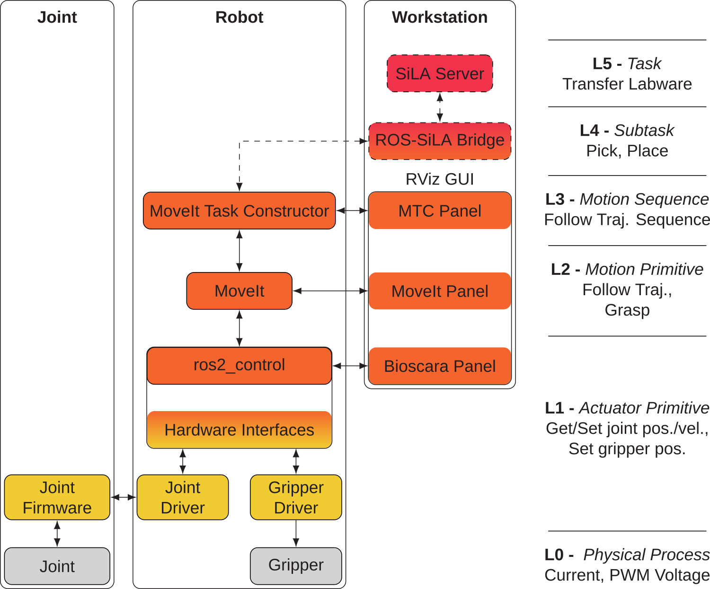

Bioscara
This is the documentation for Bioscara DIY SCARA robot developed at the DTU Arena for Life Science Automation (DALSA). See the table of contents below to see the available user guides.
The Getting Started guides help you to install dependencies, build the ROS2 workspace, setup the network and finally operate the robot.
The Developer Guides guides are targeted towards developers and contain other useful instructions, for example how to build this documentation or flash the joint firmware.
The Hardware guides describe the hardware assembly instructions. Note: These require a consolidation!
The Source Code Documentation links to the C++ API documentation of the ROS2 packages.
The PDF version of this documentation can be found here: bioscara.pdf
Architechture
The control system architecture is schematically displayed in the figure below. The yellow colors whos custom C++ hardware specific code which is described in the C++ API Documentation. The orange colors are the ROS2 applications for motion control and trajectory generation. The red colors are SiLA applications, not yet implemented as indicated by the dashed lines.
{kind=link}
